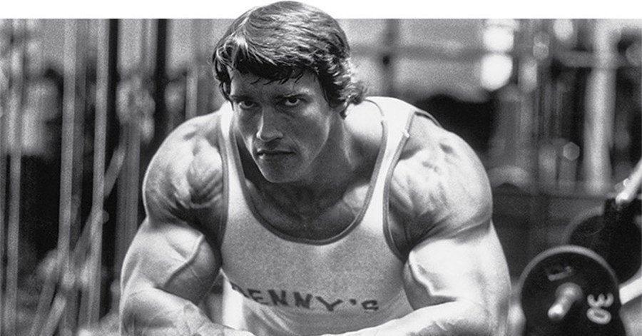

Arnold's Fitness and Weight-lifting
Nicknamed “The Austrian Oak” Arnold was one of the most important figures in bodybuilding. He made his pro debut it 1968 Mr. Universe where he went on to win. He preceded to win the following two Mr. Universe events he entered in 1969 and 1970. 1969 was the first time Arnold entered Mr. Olympia. He wouldn’t be so lucky as he came short to long-time rival Sergio Oliva. Luckily for Arnold he would be able to swiftly forget about his defeat and go on to win the following 7 Mr. Olympia’s he entered; the first win made him the youngest to ever win at just 23 years of age. He was also a world-renowned power lifter representing Austria. He won the international powerlifting championships and German Powerlifting Championships.
Why would this be inspirational to someone who isn’t a bodybuilder?
Well, Arnold moved over to America by himself with a dream of becoming Mr. Olympia. He would'nt let his lack of English or any other obstacle get in his way. Through seer willpower and determination to achieve his goal he was able to overcome any obstacle which is extremely motivational for me.
